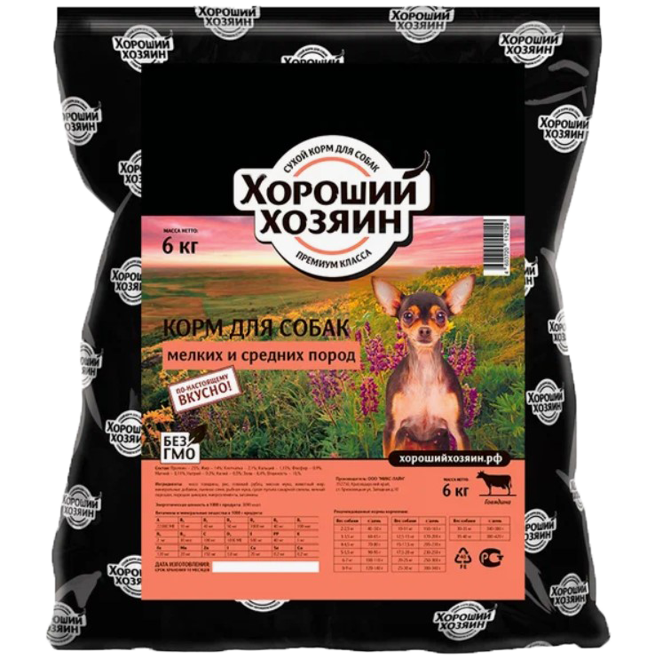
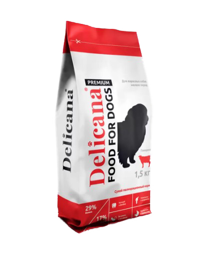
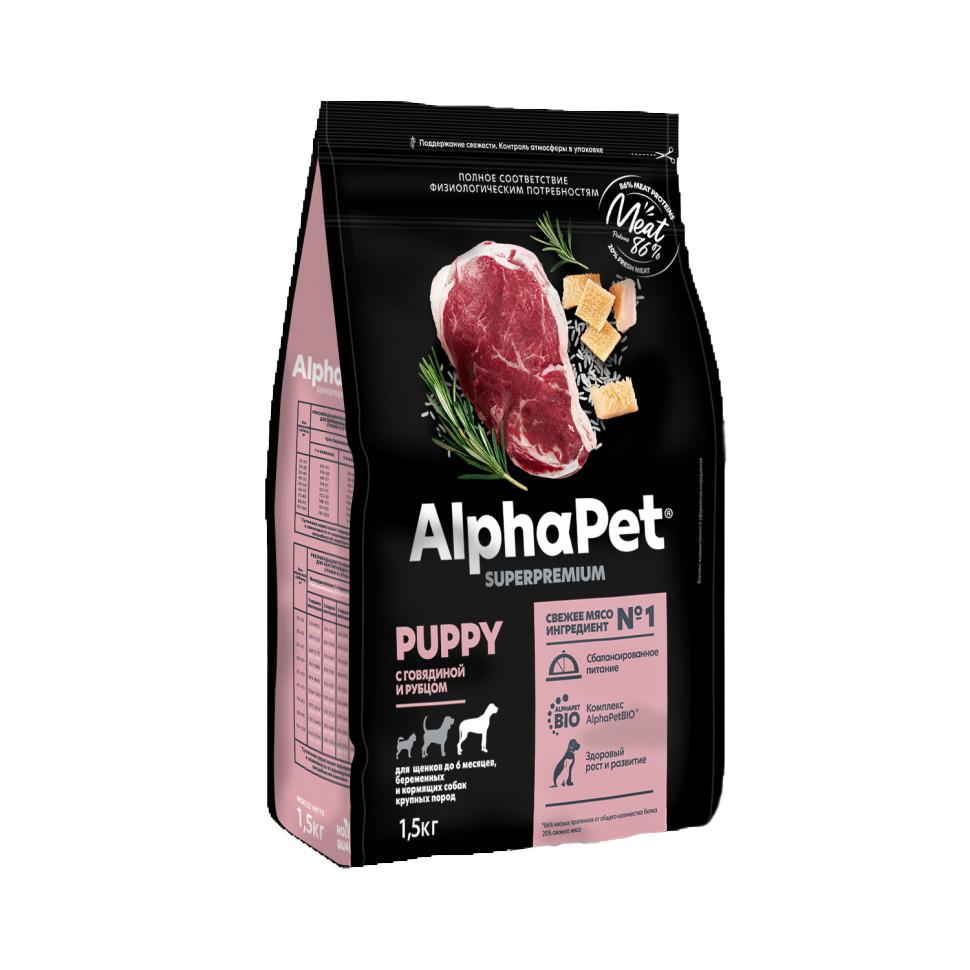
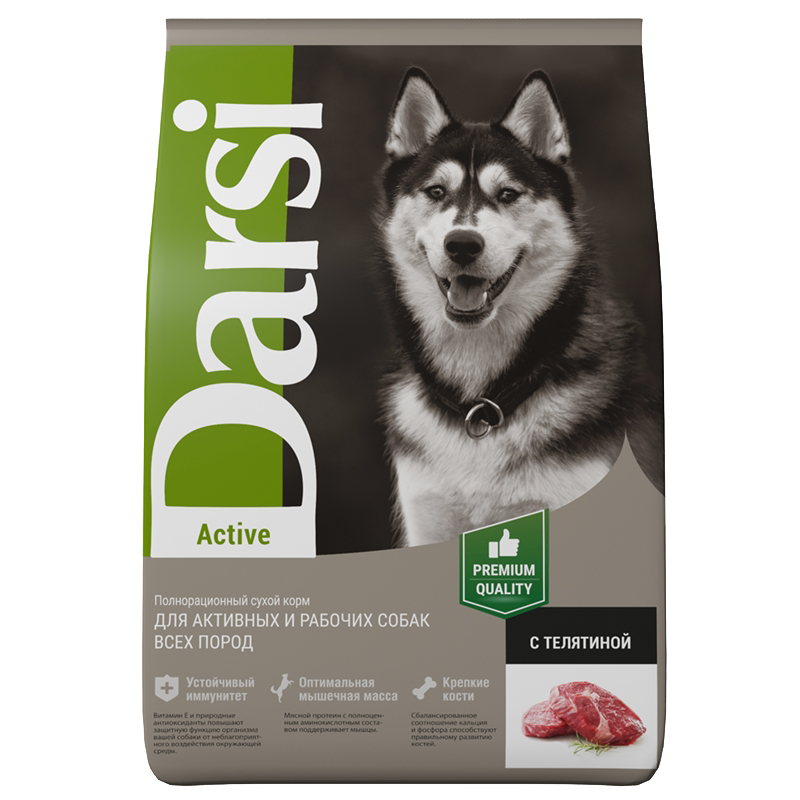
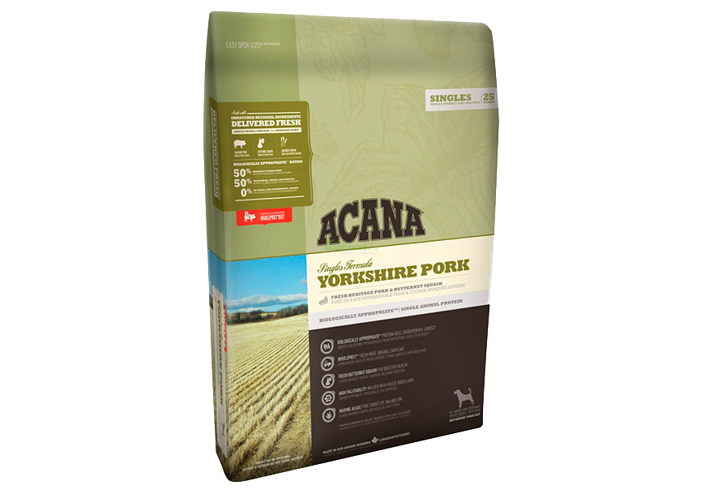
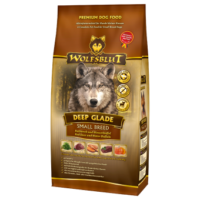
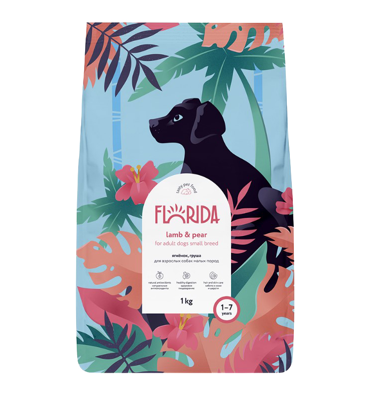
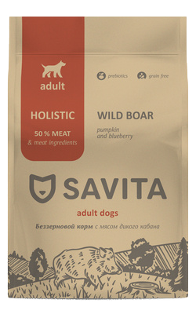
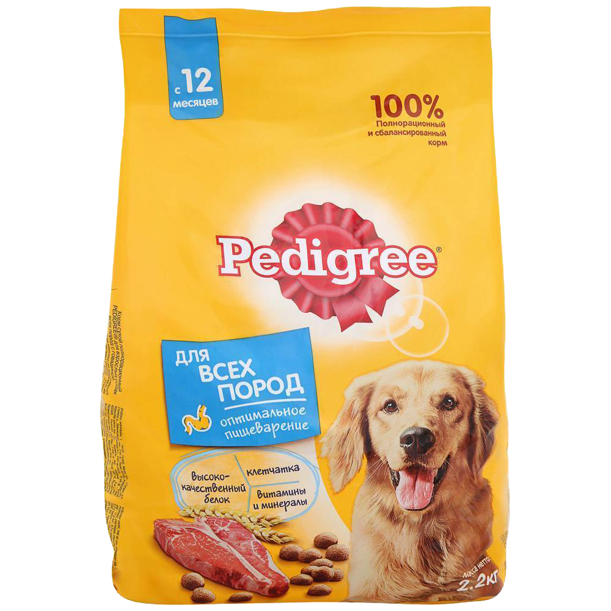

ТАКОЙ МАЛЕНЬКИЙ, А ТАКОЙ ПРОЖОРЛИВЫЙ?


Что самое главное в корме? Конечно, состав и цена.
Если в корме низкое содержание мяса, то он считается некачественным, как и корм, в который мясо входит в состав в сомнительном виде, например, в виде муки. Важно убедиться, что белок в корме имеет приемущественно животное происхождение. Пшеница и кукуруза считаются вредными зерновыми для собак. Они плохо усваиваются и затрудняют процесс пищеварения питомца.
Если у вашей собаки аллергия на какой-то ингридиент, то придется тщательно просматривать состав каждой упаковки. Посмотрев состав кормов на сайте, вы сразу поймете, какие корма вам подходят, а какие - нет.
На сайте вы сможете отфильтровать различные корма по цене и качеству и подобрать идеальный именно для вас!
Также у нас есть калькулятор, чтобы вы смогли рассчитать, сколько граммов корма нужно вашему питомцу в сутки.